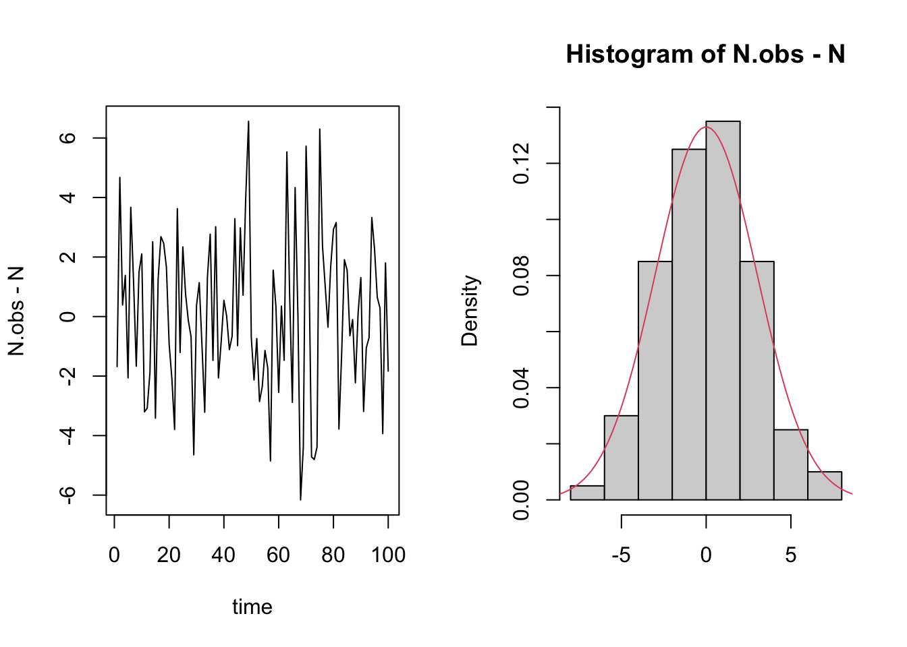

VectorByte Methods Training
Regression Review
Learning Objectives
- Review the idea behind regression
- Review how to make predictions from a regression model
- Practice simple regression procedures in
Rincluding diagnostic plots
A simple population simulation
\begin{align*} N(t) & = s N(t-1) + b +W(t) \\ N_{\mathrm{obs}}(t) & = N(t) + V(t) \end{align*}
Let’s specify a few values/distributions:
- s=0.75, b=10, N_0=10, T_{\mathrm{max}}=100
- W(t) \stackrel{\mathrm{iid}}{\sim} \mathcal{N}(0, 5^2)
- V(t) \stackrel{\mathrm{iid}}{\sim} \mathcal{N}(0, 3^2)
Let’s simulate from this system to generate some test data.
MC simulation of simple system
Changes in population size

Sequential observations
If we had just observed these data, how might we try to estimate parameters?
Estimating parameters
Our model (assuming no observational stochasticity for now) can be written as
\begin{align*} N(t) & = s N(t-1) + b + \varepsilon(t) \\ \varepsilon(t) & \stackrel{\mathrm{iid}}{\sim} \mathcal{N}(0, \sigma^2) \\ \end{align*}
We want to know s, b, and \sigma. Notice that without the error, the process just looks like \begin{align*} N(t) = s N(t-1) + b \rightarrow y = b_1 x + b_0 \end{align*} This is just a line!
Review: What is a good line?
We desire a strategy for estimating the slope and intercept parameters in the model \hat{Y~} = b_0 + b_1 X.
This involves
- choosing a criteria, i.e., quantifying how good a line is
- and matching that with a solution, i.e., finding the best line subject to that criteria.
Although there are lots of ways to choose a criteria
- only a small handful lead to solutions that are “easy” to compute
- and which have nice statistical properties
Most reasonable criteria involve measuring the amount by which the fitted value obtained from the line differs from the observed value of the response value(s) in the data.
- This amount is called the residual.
- Good lines produce small residuals.
The dots are the observed values and the line represents our fitted values given by \hat{Y~}_i = b_0 + b_1 X_i.
The residual e_i is the discrepancy between the fitted \hat{Y~}_i and observed Y_i values.
- Note that we can write Y_i = \hat{Y~}_i + (Y_i -\hat{Y~}_i) = \hat{Y~}_i + e_i.
Least Squares
A reasonable goal is to minimize the size of all residuals:
- If they were all zero we would have a perfect line.
- We trade-off between moving closer to some points and at the same time moving away from other points.
Since some residuals are positive and some are negative, we need one more ingredient.
- |e_i| treats positives and negatives equally.
- So does e_i^2, which is easier to work with mathematically.
Least squares chooses b_0 and b_1 to minimize SSE = \sum_{i=1}^n e^2_i = \sum_{i=1}^n (Y_i - \hat{Y~}_i)^2= \sum_{i=1}^n (Y_i - [b_0 + b_1 X_i])^2.
Optional Practice Exercise
Show that the least squares estimates for b_0 and b_1 are: b_0 = \bar{Y} - b_1 \bar{X}~~~\mathrm{and}~~~b_1 = \frac{ \sum_{i=1}(X_i Y_i) - n\bar{Y}\bar{X}}{\sum_{i=1}X_i^2 - n\bar{X}^2} where \bar{X} denotes the arithmetic mean of X.
Hint: You will take (partial) derivatives of SSE w.r.t.~b_0 and b_1, set these equal to 0 and solve.
Estimating parameters
We can use these formulas to estimate our parameters and draw a new line \Rightarrow make a prediction
\begin{align*} \hat{b~} & = b_0 = 14.55 \\ \hat{s~} & = b_1 = 0.63 \end{align*}
- The least squares line is different than our eyeballed line;
- and we know its the best line in a certain sense.
Estimation of error variance
We also want to estimate \sigma. If we think about the definition of the variance in our system in terms of the residuals:
\sigma^2 = \text{var}(\varepsilon_i) = \mathbb{E}[(\varepsilon_i - \mathbb{E}[\varepsilon_i])^2] = \mathbb{E}[\varepsilon_i^2].
This seems to indicate that a sensible strategy would be to estimate the average for squared errors with the sample average squared residuals: \hat{\sigma~}^2 = \frac{1}{n} \sum_{i=1}^n e_i^2
However, this is not an unbiased estimator of \sigma^2.
- This means that \mathbb{E}[\hat{\sigma~}^2] \ne \sigma^2.
For that, we have to alter the denominator slightly: s^2 = \frac{1}{n-p} \sum_{i=1}^n e_i^2 = \frac{SSE}{n-2} (p is the number of other parameters we estimate; i.e. 2 for b_0 +b_1).
Note:
- We have n-p degrees of freedom because p (=2) have been “used up” in the estimation of b_0 and b_1.
- It is often convenient to report s = \sqrt{SSE/(n-p)}, which is in the same units as Y.
Estimating parameters
Now we can get (point) estimates of all of the parameters for our system.
\begin{align*} \hat{b~} & = 14.55\mathrm{,}~~ b_{\mathrm{true}}=10\\ \hat{s~} & = 0.63\mathrm{,}~~ s_{\mathrm{true}}=0.75\\ \hat{\sigma~} & = 4.88\mathrm{,}~~ \sigma_{\mathrm{true}}=5 \end{align*}

Prediction and the modeling goal
A prediction rule is any function where you input X and it outputs \hat{Y~} as a predicted response at X.
The least squares line is a prediction rule:
\hat{Y~} = f(X) = b_0 + b_1 X
This rule tells us what to do when a new X comes along just run it through the formula above and obtain a guess \hat{Y~}!
However, it is not going to be a perfect prediction.
We need to devise a notion of forecast accuracy.
- How sure are we about our forecast? Or
- How different could Y be from what we expect?
Forecasts are useless without some kind of uncertainty qualification/quantification.
One method is to specify a range of Y values that are likely, given an X value.
- a prediction interval: a probable range for Y\!\,s given X.
Key insight: to construct a prediction interval, we will have to assess the likely range of residual values corresponding to a Y value that has not yet been observed!
We must “invest” in a probability model. For our population model, for instance, we chose a normal distribution for the observation error.
We must also acknowledge that the “fitted” line may be fooled by particular realizations of the residuals.
- i.e., that our estimated coefficients b_0 & b_1 are random
Luckily for us, the case of a line with normally distributed noise around it is well studied theoretically, and you’ve probably seen it before
Simple linear regression (SLR) model
Y = \beta_0 + \beta_1 X + \varepsilon, \;\;\;\;\; \varepsilon \sim \mathcal{N}(0, \sigma^2)
- It is a model, so we are assuming this relationship holds for some true but unknown values of \beta_0, \beta_1.
- Greek letters remind us they are not the same as the LS estimates b_0 and b_1.
The error \varepsilon is independent, additive, “idosyncratic noise”.
- Its distribution is known up to its spread \sigma^2.
- Greek letters remind us that \varepsilon is not the same as e.
Before looking at any data, the model specifies
- how Y varies with X on average: \mathbb{E}[Y|X] = \beta_0 + \beta_1 X;
- and the influence of factors other than X, \varepsilon \sim \mathcal{N}(0, \sigma^2) independently of X.
Context from the population example
Think of \mathbb{E}[Y|X] as the average size of the population at time t+1 if the population had size X at time t, and \sigma^2 is the spread around that average. When we specify the SLR model we say that
- the average population depends is linearly on its previous size, but we don’t know the coefficients.
- Observations could have a higher or lower value than the average, but how much they differ is unknown and
- is independent of the previous population size
- is normally distributed
We think about the data as being one possible realization of data that could have been generated from the model Y|X \sim \mathcal{N}(\beta_0 + \beta_1 X, \sigma^2)
\Rightarrow \sigma^2 controls the dispersion of Y around \beta_0 + \beta_1 X
Prediction intervals in the true model
You are told (without looking at the data) that \beta_0 = 13 ; \beta_1= 0.9 ; and \sigma = 3. You are asked to predict the population next year if the current population has 90 individuals. What do you know about Y from the model? \begin{eqnarray*} Y &=& 13 + 0.9(90) + \varepsilon\\ &=& 94 + \varepsilon \end{eqnarray*}
Thus our prediction for the population at the next time point is Y \sim \mathcal{N}(94, 3^2).
Thus, the model says that the mean number of individuals next year if there are 90 this year is 94 and that deviation from mean is within \approx 6 (95% level).
We are 95% sure that
- -6< \varepsilon < 6
- 88 < Y < 100
In general, the 95% Prediction Interval is: PI = \beta_0 +\beta_1 X \pm 2\sigma.
This PI only incorporates uncertainty due to the inherent stochasticity.
We also must incorporate another source of risk: uncertainty in the parameters \beta_0 and \beta_1
Sampling distribution of LS estimates
How much do our estimates depend on the particular random sample that we happen to observe?
We can run the following experiment:
Randomly draw different samples of the same size.
For each sample, compute the estimates b_0, b_1, and s.
If the estimates do vary a lot, then it matters which sample you happen to observe.
The LS lines are much closer to the true line when n=50.
When n=5, some lines are close, others aren’t: we need to get lucky.
Also notice that the LS lines are, more often than not,
closer to the true line near middle of the cloud of data.
They get farther apart away from the middle of the cloud.
This is as true for small samples (n=5) as it is for large (n=50).
[See a Monte Carlo demonstration in linear.R]
Sampling distribution of LS line
What did we just do?
- We “imagined” through simulation the sampling distribution of a LS line.
In real life we get just one data set, and we don’t know the true generating model. But we can still imagine.
We first find the sampling distribution of our LS coefficients, b_0 and b_1...
... which requires some review.
In the online reading and review materials you should have come across some useful probability/stats facts, including:
\mathbb{E}(X_1+X_2) = \mathbb{E}(X_1)+ \mathbb{E}(X_2)
\mathbb{E}(cX_1) = c \mathbb{E}(X_1)
\text{var}(c X_1) = c^2\text{var}(X_1)
\text{var}(X_1+X_2) = \text{var}(X_1)+\text{var}(X_2) + 2\text{cov}(X_1 X_2).
Recall: distribution of the sample mean
Step back for a moment and consider the mean for an iid sample of n observations of a random variable \{X_1,\ldots,X_n\}.
Suppose that \mathbb{E}(X_i) = \mu and \text{var}(X_i) = \sigma^2, then
- \mathbb{E}(\bar{X}) = \frac{1}{n} \sum\mathbb{E}(X_i) = \mu
- \text{var}(\bar{X}) = \text{var}\left( \frac{1}{n} \sum X_i \right) = \frac{1}{n^2} \sum \text{var}\left( X_i \right) = \displaystyle \frac{\sigma^2}{n}.
Central Limit Theorem
The CLT states that for iid random variables, X, with mean \mu and variance \sigma^2, the distribution of the sample mean becomes normal as the number of observations, n, gets large.
That is, \displaystyle \bar{X} \rightarrow_{n} \mathcal{N}(\mu, \sigma^2/n) , and sample averages tend to be normally distributed in large samples.
We are now ready to describe the sampling distribution of the least squares line ...
... in terms of its effect on the sampling distributions of the coefficients
b_1 = \hat{\beta~}_1, the slope of the line
b_0 = \hat{\beta~}_0, the intercept,
and how they covary together,
given a particular (fixed) set of X-values.
Sampling distribution of b_1
It turns out that b_1 is normally distributed: b_1 \sim \mathcal{N}(\beta_1, \sigma^2_{b_1}).
b_1 is unbiased: \mathbb{E}[b_1] = \beta_1.
The sampling sd \sigma_{b_1} determines precision of b_1: \sigma_{b_1}^2 = \text{var}(b_1) = \frac{\sigma^2}{\sum (X_i - \bar{X})^2} = \frac{\sigma^2}{(n-1)s_x^2}. It depends on three factors: 1) sample size (n); 2) error variance (\sigma^2 = \sigma_\varepsilon^2); and 3)X-spread (s_x).
Sampling Distribution of b_0
The intercept is also normal and unbiased: b_0 \sim \mathcal{N}(\beta_0, \sigma^2_{b_0}), where \sigma^2_{b_0} = \text{var}(b_0) = \sigma^2 \left(\frac{1}{n} + \frac{\bar{X}^2}{(n-1) s_x^2} \right).
What is the intuition here? \text{var}(\bar{Y} - \bar{X} b_1) = \text{var}(\bar{Y}) + \bar{X}^2\text{var}(b_1) {~-~ 2\mathrm{cov}(\bar{Y},b_1) }
- \bar{Y} and b_1 are uncorrelated because the slope (b_1) is invariant if you shift the data up or down (\bar{Y}).
Optional Practice Exercise
Show that:
\mathbb{E}[b_1] = \beta_1
\mathbb{E}[b_0] = \beta_0
\text{var}(b_0) = \sigma^2 \left(\frac{1}{n} + \frac{\bar{X}^2}{(n-1) s_x^2} \right)
Why is it that b_0 and b_1 are normally distributed?
Joint Distribution of b_0 and b_1
We know that b_0 and b_1 can be dependent, i.e., \mathbb{E}[(b_0 -\beta_0)(b_1 - \beta_1)] \ne 0. This means that estimation error in the slope is correlated with the estimation error in the intercept. \mathrm{cov}(b_0,b_1) = -\sigma^2 \left(\frac{\bar{X}}{(n-1)s_x^2}\right).
Interpretation:
Usually, if the slope estimate is too high, the intercept estimate is too low (negative correlation).
The correlation decreases with more X spread (s^2_x).
Estimated variance
However, these formulas aren’t especially practical since they involve an unknown quantity: \sigma.
Solution: use s, the residual sample standard deviation estimator for \sigma = \sigma_\varepsilon. s_{b_1} = \sqrt{\frac{s^2}{(n-1)s_x^2}} ~~~ s_{b_0} = \sqrt{s^2 \left(\frac{1}{n} + \frac{\bar{X}^2}{(n-1)s^2_x}\right)}
s_{b_1} = \hat{\sigma~}_{b_1} and s_{b_0} = \hat{\sigma~}_{b_0} are estimated coefficient sd’s.
Interpretation:
We now have a notion of standard error for the LS estimates of the slope and intercept.
- Small s_b values mean high info/precision/accuracy.
Normal and Student-t
Again, recall what Student discovered:
If \theta \sim \mathcal{N}(\mu,\sigma^2), but you estimate \sigma^2 \approx s^2 based on n-p degrees of freedom, then \theta \sim t_{n-p}(\mu, s^2).
For SLR, for example:
\bar{Y} \sim t_{n-1}(\mu, s_y^2/n).
b_0 \sim t_{n-2}\left(\beta_0, s^2_{b_0}\right) and b_1 \sim t_{n-2}\left(\beta_1, s^2_{b_1}\right)
We can use these distributions for drawing conclusions about the parameters via:
Confidence intervals
Hypothesis tests
Forecasting
The conditional forecasting problem:
- Given covariate(s) X_f and sample data \{X_i, Y_i\}_{i=1}^n, predict the “future” observation Y_f.
The solution is to use our LS fitted value: \hat{Y~}_f = b_0 + b_1X_f.
- That’s the easy bit.
The hard (and very important!) part of forecasting is assessing uncertainty about our predictions.
If we use \hat{Y~}_f, our prediction error is
e_f = Y_f - \hat{Y~}_f = Y_f - b_0 - b_1X_f
We can decompose e_f into two sources of error
Inherent idiosyncratic randomness (due to \varepsilon).
Estimation error in the intercept and slope
(i.e., discrepancy between our line and “the truth”).
\begin{eqnarray*} e_f &=& Y_f - \hat{Y~}_f = (Y_f - \mathbb{E}[Y_f | X_f]) + \mathbb{E}[Y_f | X_f]-\hat{Y~}_f \\ &=& \varepsilon_f + (\mathbb{E}[Y_f | X_f] -\hat{Y~}_f )\\ &=& \varepsilon_f + (\beta_0 - b_0) + (\beta_1 - b_1)X_f. \end{eqnarray*}
The variance of our prediction error is thus \text{var}(e_f) = \text{var}(\varepsilon_f) + \text{var}(\mathbb{E}[Y_f | X_f] -\hat{Y~}_f ) = \sigma^2 + \text{var}(\hat{Y~}_f) We know \text{var}(\varepsilon_f) = \sigma^2 \approx s^2, but what about the fit error?
From the sampling distributions derived earlier, \text{var}(\hat{Y~}_f) is \begin{eqnarray*} \text{var}(b_0 + b_1 X_f) &=& \text{var}(b_0) + X_f^2 \text{var}(b_1) + 2X_f\mathrm{cov}(b_0,b_1) \\ &=& {\sigma^2 \left[\frac{1}{n} + \frac{(X_f - \bar{X})^2}{(n-1) s_x^2} \right]}. \end{eqnarray*}
Replacing \sigma^2 with s^2 gives the standard error for \hat{Y}_f.
And hence the variance of our predictive error is \text{var}(e_f) = s^2 \left[ 1 + \frac{1}{n} + \frac{(X_f-\bar{X})^2}{(n-1) s_x^2} \right].
Putting it all together, we have that Y_f \sim \mathcal{N}\left(\hat{Y}_f, \sigma^2 \left[ 1 + \frac{1}{n} + \frac{(X_f - \bar{X})^2}{(n-1) s_x^2} \right] \right) (sums of normals are normal) or, with estimated variance, Y_f \sim t_{n-p}\left(\hat{Y}_f, {\color{blue}s^2} \left[ 1 + \frac{1}{n} + \frac{(X_f - \bar{X})^2}{(n-1) s_x^2} \right] \right).
b_0 + b_1 X_f \pm t_{n-2,\alpha/2} \left(s~ \sqrt{1+ \frac{1}{n} + \frac{(X_f - \bar{X})^2}{(n-1) s_x^2}}\right).
Looking closer at what we’ll call
\color{blue} s_{pred} = s~ \sqrt{1+ \frac{1}{n} + \frac{(X_f - \bar{X})^2}{(n-1) s_x^2}} = \sqrt{s^2 + s_{\mathrm{fit}}^2}.
A large predictive error variance (high uncertainty) comes from
Large s (i.e., large \varepsilon’s).
Small n (not enough data).
Small s_x (not enough observed spread in covariates).
Large (X_f - \bar{X}).
The first three are familiar... what about the last one?
For X_f far from our \bar{X}, the space between lines is magnified ...
\Rightarrow The prediction (conf.) interval needs to widen away from \bar{X}
NOTE: For SLR (and MLR) we can write down equations to describe these predictive intervals, sampling distributions.
However, for more complex problems this is not the case.
Sometimes we can do analytic/asymptotic approximations. The rest of the time we use simulation.